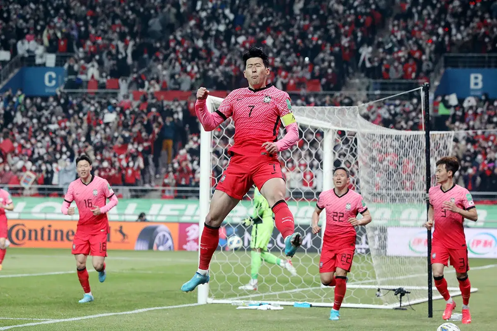
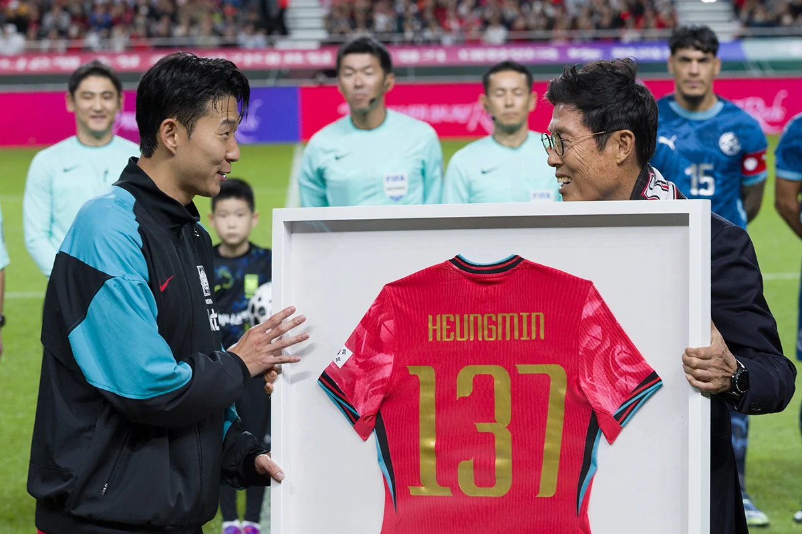
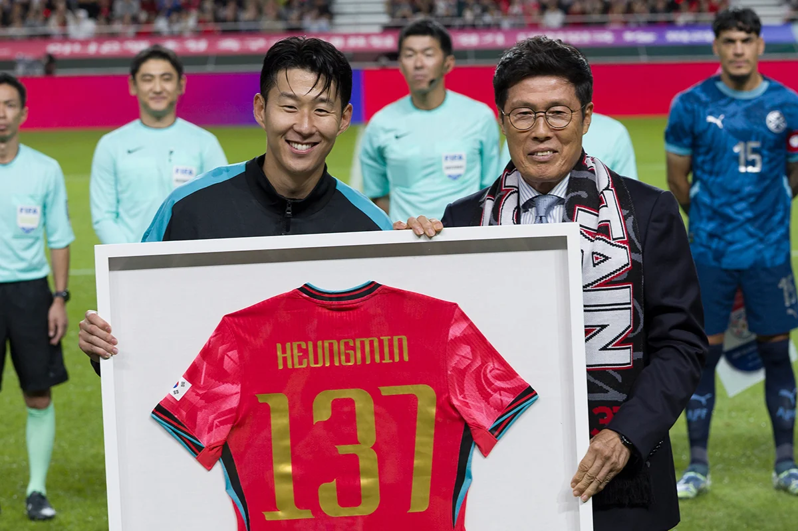
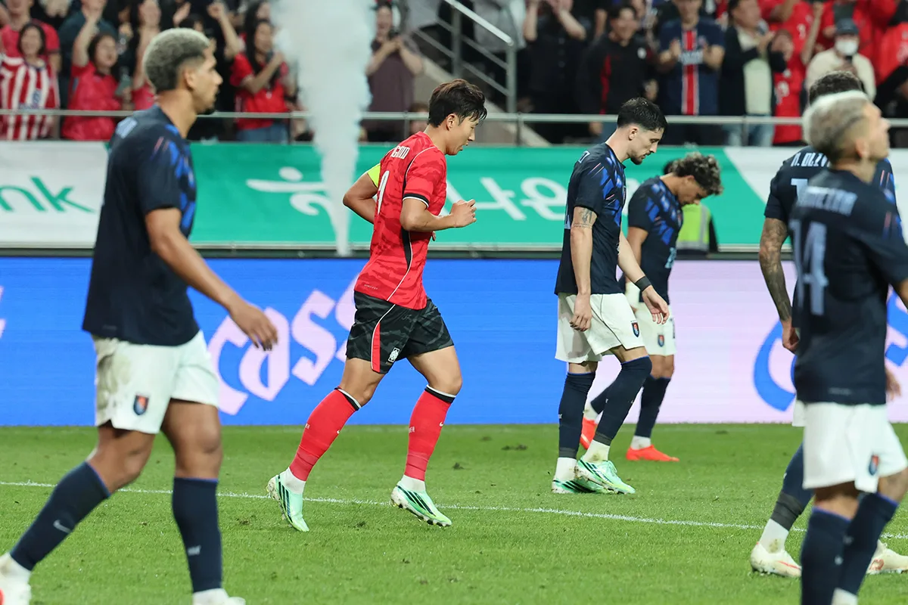
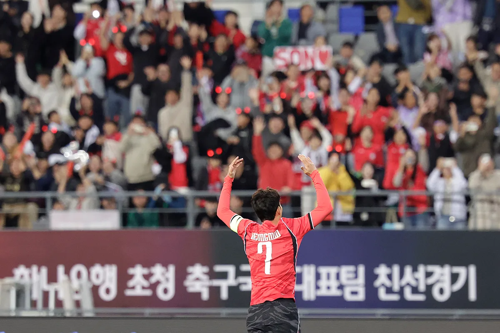
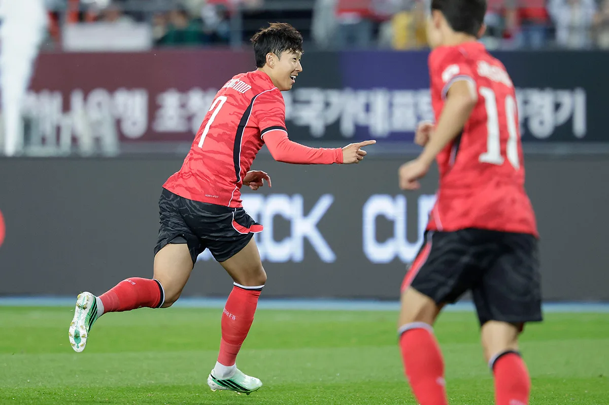
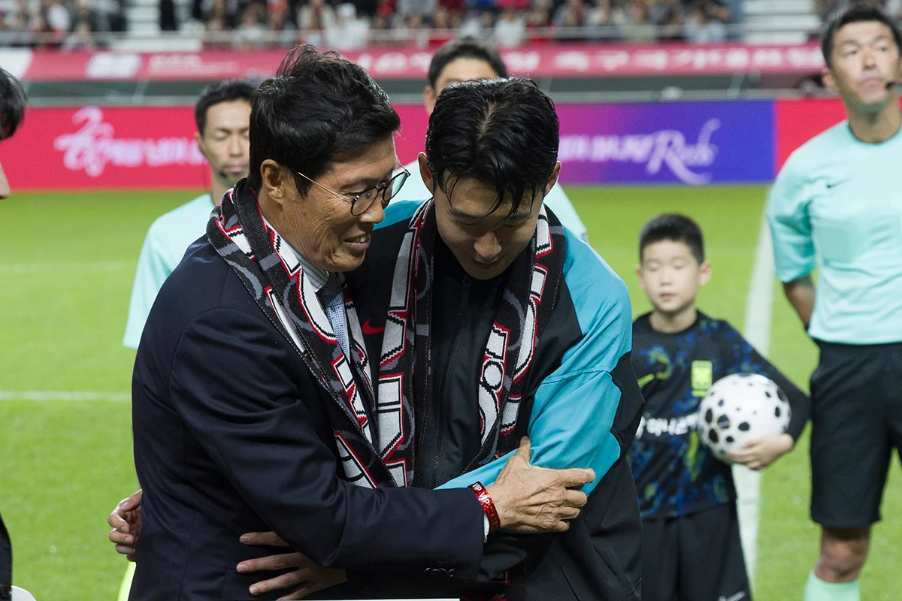

사진 준비 중
전설로 남은 자리
마침내 손에 닿다

한국 남자 A매치 단독 최다골59
기록을 바꾼 59호골.
2026.10.06 · 우즈베키스탄전1배
다시 보기 · 골 찾기
전설로 남은 자리
마침내 손에 닿다
01 / 골을 만든 발과 머리
전체 59골

오른발 / 2022 이란전
38골 / 전체 59골
11년의 기다림을 깬 오른발.
전반 추가시간, 페널티박스 밖에서 오른발로 선제골을 넣었다. 한국은 2:0으로 이겼다.
그날의 경기 읽기 ↗2026.10.06 기준 · 프리킥·PK는 발 득점에 포함.
첫 골부터 59호골까지 기록 보기재생하거나 골 번호로 찾아보세요.
01/ 59
18세의 첫 골
대표팀 세 번째 경기. 2011 아시안컵 인도전에서 4:1을 만들었다.
공식 경기일2011.01.18
경기 / 장소인도전 · 카타르 알가라파 스타디움
최종 스코어 · 한국:상대4:1
대회2011 아시안컵
재생 버튼을 누르면 첫 골부터 이어집니다.




02 / 두 숫자 사이의 세월
58골과 58골.
1978
차범근582026
손흥민581978년, 차범근이 58번째 골을 넣었다. 손흥민이 태어나기도 전이었다.
2018년 함께 선 두 사람 · 사진 = 뉴시스한 골도 없던 해,
열 골을 넣은 해.
첫 골부터 기록 경신까지,
해마다 몇 골을 넣었는지 돌아봤다.
5740일(15년 8개월)/ 5740일 (15년 8개월)
—
2011년
- 그해 득점
- 1골
- 연말 누적
- 1골
연도별 A매치 득점 단위: 골
옆으로 넘기고, 연도를 눌러보세요
2011 / 2026
열여덟의 첫 골.아시안컵 인도전에서 A매치 첫 골을 넣었다.

03 / 다음 세대에게
기록 너머,
다음 사람에게
"앞으로 흥민이가
후배들의 방향타가
되길 바랍니다."
"더 훌륭한 후배가
빨리 이 기록을 깰 수
있었으면 좋겠다."
태극마크를 위해 쌓은 시간과 헌신.
기록 앞에서 잊지 않은 겸손.
이제 후배가 이 기록을 깨길 바란다.

차범근 넘은 A매치 최다골, 한국 축구의 새 역사우리는 손흥민의 시대에 살고 있습니다.
기획·디렉터 최승훈 기자